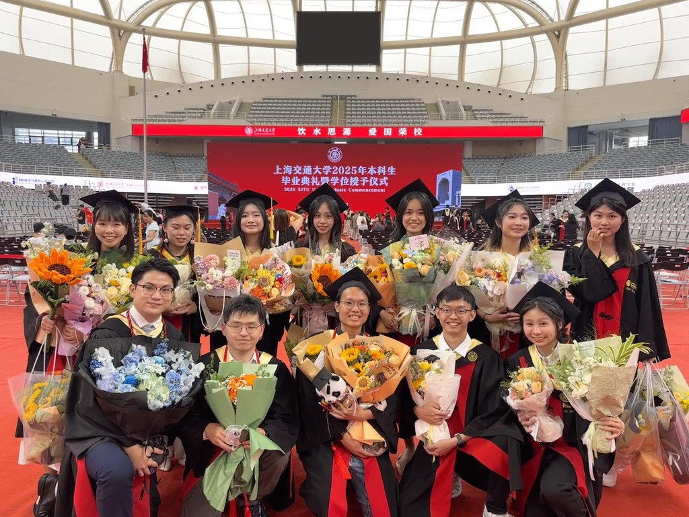

A Bittersweet Goodbye, A Hopeful Beginning
I walked across the stage at Shanghai Jiao Tong University last week—cap and gown lightly brushing shoulders I may never meet again. It feels surreal to write the words finally graduated. For an international student who has called this city home for years, that single ceremony compressed an entire era of emotion into an afternoon: joy, relief, awe, and an almost geological sadness that shifts beneath the surface.
The Compressed Chaos of Senior Year
My final year blurred past in a carousel of subway rides and Lark notifications. I spent more hours at my internship than in any lecture hall, convinced that learning to ship real code would teach me what no textbook could. Time became a scarce currency; coffee, the universal exchange rate. In retrospect, I realize how deliberately I traded that time—each late‑night commit a small investment in the person I wanted to become.
A Week on Pause
For graduation week I did something radical: I pressed pause. I took a full week off work, shut the laptop lid, and invited my family to inhabit the moment with me. We played at being tourists in the very city that had become our routine, photographing alleys we used to rush through and tasting xiaolongbao as though it were delicacy rather than dinner. I also gathered with friends from Malaysia—friends who became kin in the crucible of shared homesickness. We laughed hard, ate louder, and admitted in quieter moments that this might be the last time our GPS coordinates overlap. The word farewell suddenly carried real weight.
Gratitude in All Directions
There is an old proverb that says, “A single tree does not make a forest.” Looking back, every mentor, barista, teammate, and taxi driver formed a canopy that sheltered my growth here. Professors challenged my assumptions; street vendors taught me the cadence of local patience; classmates modeled an intellectual ferocity I want to keep burning. Without this constellation of influences, the person typing these words would be unrecognizable.
Choosing the Uncharted Path
Now the story tilts forward. My internship has morphed into a full‑time offer, and I have chosen it over several prestigious graduate‑school admissions. Walking away from those academic hallways hurt—opportunity always exacts a toll—but the gravitational pull of the AI frontier feels impossible to ignore. I want to stand where algorithms meet accountability, where code confronts consequence. That’s the laboratory I need right now.
Paperwork, Prosaic and Profound
Of course, new chapters start with unglamorous paragraphs: work‑visa applications, apartment‑hunting, bank forms that ask the same question five different ways. It is tempting to dismiss these tasks as trivial annoyances, yet they are the scaffolding on which dreams are built. If bureaucracy is the toll booth, purpose is the open road beyond it.
Looking Ahead with Measured Wonder
I carry into this next season a disciplined optimism. The AI wave will not wait, and I intend to surf it with curiosity anchored by ethics. Shanghai has taught me that progress does not preclude empathy, and that ambition without gratitude stalls quickly. So here’s to the unknown—to algorithms still unwritten, friendships yet to be forged, and a city that keeps reinventing the very skyline against which we measure our hopes.
If you ever find yourself at the intersection of conclusion and inception, pause long enough to taste the air—then keep moving. There is always another horizon, and sometimes the best way to honor your past is to sprint toward it.
———
(Let’s be real: prose this smooth? No way I wrote it alone. All the ideas and stories are mine, but huge thanks to Kimi AI for helping me optimize and rewrite. 🤖✍️)